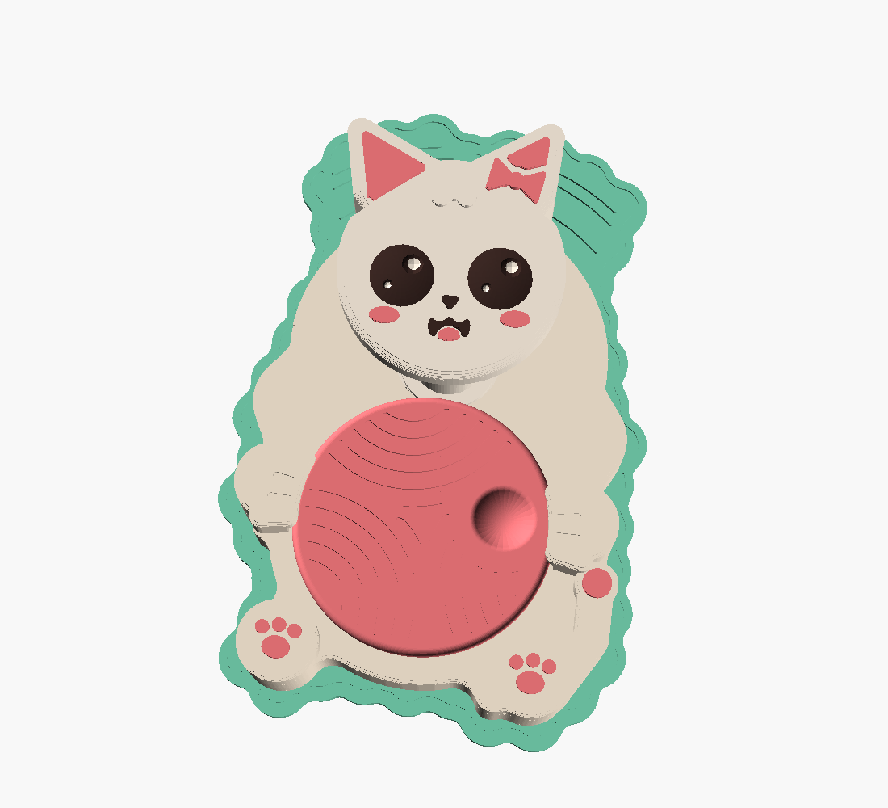

Turn the yarn ball and the kitty’s head shivers with giggles. Inside is a medieval clock escapement with no spring: your thumb is the mainspring and her head is the regulator.

loading model… Drag to turn · scroll or pinch to zoomThe motion is the recorded output of the contact-dynamics simulation that verified the design, run on the actual CAD shapes and masses of this character. It is not a hand-made animation.
Under the yarn ball sits an 8-pointed star: the escape wheel. Two legs hang down from the kitty’s head, one each side of the star, and each ends in a round pallet tip.
When you push the ball, a star point shoves one pallet out of the way. That kicks the head over, which swings the other pallet into the next gap, where the next point catches it and kicks it back. One tooth, one shiver: the head buzzes back and forth eight times per turn of the ball.
A clock would add a spring to set the rhythm. Here the head’s own weight and swing do it, so the faster you push, the faster she giggles, and the ball feels like it is turning through honey. Let go and everything stops at once.
This family of “runaway” escapements dates back to 13th-century tower clocks. What is new here is that the regulator is the character’s head, that it is printed already assembled, and that its shape was found by search.
A random search over more than 1,000 escapement geometries kept only shapes in which a hand-pushed wheel can never lock the head or slip past it. It checked both directions, posts printed 0.4 mm off, pallets 0.2 mm too fat or thin, loose bearings and friction up to μ 0.5. Every hidden pocket and gap in the body was then computed as the swept shape of the motion. The winning numbers:
| Quantity | Value | Why it matters |
|---|---|---|
| Star wheel | 8 teeth · tip r 14.30 · root r 8.90 | Eight shivers per turn; teeth tall enough to grab, short enough to never lock. |
| Pallet tips | Ø 4.29 at (±12.98, 8.68) | Round tips span 2½ teeth (112.5°) so one is always in a gap. |
| Head pivot | 24.71 mm above the wheel axis | Placed so the push angle stays under the friction-lock limit. |
| Head swing limit | ±12.42° | Four stop pads catch the legs; the head can never fling past. |
| Worst push angle | 59.2° (limit 62.7°) | Above the limit, friction would jam the toy at μ 0.35. |
| Tolerance box tested | pivot ±0.4 · tips ±0.2 · play 0.25–0.5 | 0 jams in the static screen, 60 of 60 dynamic corner runs keep shivering. |
| Bearings | Ø 8.00 posts in Ø 8.70 bores | 0.35 mm gap; a V-ridge keeps each part from lifting off. |
If your printer tends to fuse tight gaps, use the loose file (0.40 mm bearings, 0.60 mm swept gaps, 0.6 mm float gaps). If the ball skips teeth, try deep; if it feels notchy, try shallow.
Print files (3MF per character, with per-part infill) and the parametric source are on the claude/kids-fidget-toy branch. Rebuild every STL with python3 -m purrbobble.build --all.
Every character was rebuilt and run through four independent checkers: escapement dynamics on the real CAD shapes, a 3-D collision sweep of the whole motion, layer-by-layer printability with a real PrusaSlicer slice, and a child-safety audit. Warnings are listed in the reports; failures block release.
| Character | Escapement | Motion & clearances | Printability | Child safety |
|---|
None of this replaces a test print. Print the kitty first, check that it frees by hand and turns both ways, and only then make the others.
All three parts are larger than the choking-hazard test cylinder: the ball is 36 mm across, the head at least 41 mm, the body about 53 × 84 mm. Each moving part is held by two separate features, so nothing comes loose even if one breaks. There are no springs, magnets, screws, glued eyes or stickers.
The clockwork is sealed between the back plate, the ball and the body. Every moving edge you can reach either keeps a constant gap or stays under 2 mm. The only power is your finger, and the head stores a few millijoules at its fastest buzz.
Ages 6+. Home 3D-printed toy, not certified to EN 71 or ASTM F963. An adult should check it for cracks before each play session. Not for children who still put toys in their mouths.